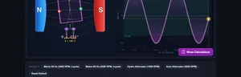
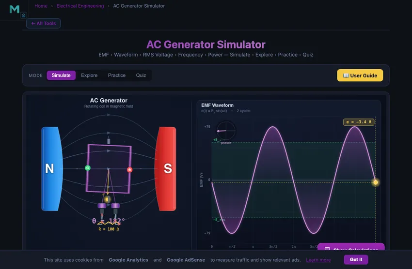
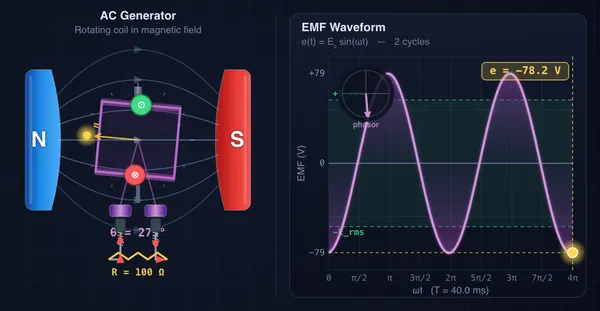

AC Generator Simulator
EMF • Waveform • RMS Voltage • Frequency • Power — Simulate • Explore • Practice • Quiz
Σ Live equations — values substituted from current state
💡 What-if coach — insights from current values
1 Overview
The AC Generator Simulator demonstrates how a rotating coil inside a magnetic field generates a sinusoidal electromotive force (EMF) through electromagnetic induction. Based on Faraday’s law, the instantaneous EMF is e(t) = NBAω sin(ωt), where N is the number of turns, B is the magnetic flux density in Tesla, A is the coil area in m², and ω is the angular velocity in rad/s. You can adjust each parameter and observe the rotating coil animation alongside the real-time sinusoidal waveform, peak voltage, RMS value, frequency, and power output.
This tool is built for electrical engineering students studying electromagnetic induction, engineering trainees learning alternator principles, and physics learners exploring the relationship between mechanical rotation and AC power generation.
2 Building the Circuit

The simulator opens in Simulate mode with N = 100 turns, B = 0.50 T, A = 0.010 m², speed = 1500 RPM, and Rload = 100 Ω. To begin:
- Drag the Turns N slider (1–500) to change the number of coil turns. More turns means higher peak EMF.
- Adjust the Flux B slider (0.1–2.0 T) to change the magnetic field strength.
- Change the Area A slider (0.001–0.1 m²) to modify the coil cross-sectional area.
- Drag the Speed slider (100–3600 RPM) to control rotational speed. This changes both peak EMF and frequency simultaneously.
- Set the Load R slider (1–1000 Ω) to add a resistive load and see current and power output.
- Click Play to start the coil rotation animation.
3 Energising the Circuit
Simulate mode is the main interactive workspace. The canvas shows a rotating rectangular coil inside magnetic poles and a live sinusoidal EMF waveform graph. Key controls and relationships:
- Turns N: Peak EMF is directly proportional to N. Doubling turns doubles E₀.
- Flux B (Tesla): Peak EMF is directly proportional to B. Stronger magnets produce higher voltage.
- Area A (m²): Peak EMF scales linearly with coil area. Larger coil area captures more magnetic flux.
- Speed (RPM): Determines both peak EMF and frequency. For a 2-pole generator, f = RPM/60. At 3000 RPM, f = 50 Hz; at 3600 RPM, f = 60 Hz.
- Load R (Ω): With a load connected, Irms = Erms/R and power P = Erms²/R.
- Play button: Starts/stops the coil rotation animation synchronised with the waveform.
Readout cards display: peak EMF (E₀ = NBAω), RMS EMF (E₀/√2), frequency (Hz), RMS current (A), power (W), and period (ms).
4 Circuit Theory
Explore mode organises generator theory into three categories:
- Fundamentals: Covers Faraday’s law of electromagnetic induction, magnetic flux linkage (Φ = NBA cos(ωt)), the relationship between flux change and induced EMF (e = −dΦ/dt), and how sinusoidal waveforms arise from uniform circular motion.
- Components: Describes the stator (permanent magnets or field windings providing the magnetic field), rotor (rotating coil/armature), slip rings (continuous rings for AC output), and brushes (carbon contacts). Explains the difference between AC generators (slip rings) and DC generators (split-ring commutator).
- Applications: Covers power station synchronous generators, automotive alternators, wind turbine generators, the multi-pole frequency formula f = (P × n)/120, and three-phase generation with 120° phase displacement.
5 Try a Problem
Practice mode generates problems such as: “A coil with 200 turns and area 0.05 m² rotates at 3000 RPM in a 0.8 T field. Calculate the peak EMF”, “Find the RMS voltage if E₀ = 340 V”, or “What speed in RPM is needed to generate 50 Hz with a 4-pole alternator?” Enter your answer and receive step-by-step solutions.
Quiz mode presents 5 multiple-choice questions covering the EMF equation, Faraday’s law, RMS vs peak relationships, frequency calculation, and generator component identification. Review your score and detailed explanations at the end.
6 Presets, Calculations, Export & Keyboard
- Presets: One-click setups for Mains 50 Hz, Mains 60 Hz, Hydro alternator, Automotive alternator, and Reset default.
- Stepper inputs: Each slider has a companion [−] [number] [+] stepper. Type a value directly or click the buttons for precise increments.
- Show Calculations: The calculator button on the canvas opens a modal with the step-by-step derivation of E₀, RMS, frequency, current, power and period using your current values.
- Learning panels: Live equations and a what-if coach update with every parameter change. Use Expand all / Collapse all to manage screen space.
- Export CSV: Downloads two full cycles of the waveform (time, instantaneous EMF, instantaneous current).
- Export PNG: Saves the current canvas frame as a PNG with a NHIT VisualLab watermark.
- Right-click menu on the canvas: Export PNG, Export CSV, or Reset Defaults.
- Keyboard: Space toggles play/pause when the canvas is focused. Enter submits practice and quiz answers.
7 Tips & Best Practices
- The peak EMF equation E₀ = NBAω contains four independent variables. Change one at a time to see its individual effect on the waveform.
- Set speed to 3000 RPM for a 50 Hz output or 3600 RPM for 60 Hz — these are the standard power generation frequencies worldwide.
- The RMS value is always E₀/√2 ≈ 0.707 × E₀. RMS is the value quoted for mains voltage (e.g., 230 V RMS in Europe corresponds to 325 V peak).
- Notice that increasing speed raises both voltage and frequency simultaneously. In real power plants, frequency must be precisely controlled by governing the prime mover speed.
- Watch the rotating coil animation: EMF is maximum when the coil is parallel to the field (maximum rate of flux change) and zero when perpendicular (momentarily no flux change).
- For multi-pole generators, use f = (P × n)/120. A 4-pole alternator only needs 1500 RPM for 50 Hz, halving the required speed.
- Practise converting between RPM, angular velocity (ω = 2πn/60), frequency, and period to build fluency with AC generation calculations.
Understanding AC Generators — Free Interactive Simulator

An AC generator (alternator) converts mechanical rotation into alternating current through electromagnetic induction. The peak EMF is E₀ = NBAω; the RMS value is E₀/√2 and frequency is f = (P×n)/120.
Key Parameters at a Glance
| Quantity | Symbol | Formula | Typical Value |
|---|---|---|---|
| Peak EMF | E₀ | NBAω | 100–500 V (small alt.) |
| RMS EMF | Erms | E₀/√2 | 0.707 × E₀ |
| Frequency | f | (P×n)/120 | 50 Hz or 60 Hz |
| Angular Velocity | ω | 2πn/60 | 157–377 rad/s |
| Period | T | 1/f | 16.7–20 ms |
| Power | P | Erms²/R | load dependent |
Adjust the coil turns, magnetic flux density, area, rotational speed, and load resistance to see how each parameter shapes the waveform, peak voltage, RMS voltage, frequency, and power output in real time. Use presets for 50 Hz/60 Hz mains, click Show Calculations for step-by-step derivations, and export waveform data as CSV or the canvas as PNG for reports.
EMF Equation and Sinusoidal Waveform
The peak EMF (E₀) of an AC generator is given by E₀ = NBAω. Since the coil rotates at a constant angular velocity, the instantaneous EMF traces a perfect sine wave. The RMS (root mean square) voltage is E₀ / √2 ≈ 0.707 × E₀, which represents the equivalent DC voltage that would deliver the same power to a resistive load. For a two-pole generator rotating at n RPM, the frequency is f = n / 60 Hz, and the period is T = 1/f seconds. Increasing the rotational speed raises both the frequency and the peak EMF, while increasing the number of turns, flux density, or coil area increases only the peak EMF without changing the frequency.
Components of an AC Generator
A basic AC generator consists of a stator (stationary part providing the magnetic field using permanent magnets or field windings), a rotor (rotating coil or armature), slip rings (continuous metal rings attached to the rotor shaft that maintain electrical contact with external circuits), and brushes (carbon or graphite contacts that press against the slip rings). Unlike a DC generator which uses a split-ring commutator, the AC generator’s slip rings allow the alternating EMF to pass through unchanged, producing a pure sinusoidal output.
Applications of AC Generators
AC generators are the backbone of modern electrical power systems. Large synchronous generators in power plants produce three-phase AC power at 50 Hz or 60 Hz for the electrical grid. Smaller alternators are used in automobiles, portable generators, and wind turbines. The frequency of the generated voltage is determined by the rotational speed and the number of magnetic poles: f = (P × n) / 120, where P is the number of poles. Three-phase generators produce three sinusoidal voltages displaced by 120°, enabling efficient power transmission over long distances.
A 230 V RMS Single-Phase Generator — The Walk-Through
Take a single-phase generator producing 50 Hz mains-equivalent voltage. The coil has 200 turns, flux density B = 1.0 T, area A = 0.04 m². What rotation speed do you need, and what peak voltage will it produce?

| Step | Working | Result |
|---|---|---|
| Required angular velocity for 50 Hz | ω = 2πf = 2π×50 | 314 rad/s |
| Rotation speed (2-pole machine) | n = 60·f/(P/2) = 60×50 | 3000 rpm |
| Peak EMF | E0 = NBAω = 200×1.0×0.04×314 | 2512 V |
| RMS EMF | Erms = E0/√2 = 2512/1.414 | 1776 V |
That is the EMF the coil produces. To get 230 V at the terminals you would step it down through a transformer, or in a real alternator you would have a much smaller coil with fewer turns. The peak-to-RMS factor of 1.414 is the part students forget when reading nameplates: a power supply labelled 230 V is RMS, so the peak voltage on the bench-top oscilloscope reads 325 V.
Why Three Phases — The Single Picture Worth a Thousand Words
If one coil rotating between two poles produces one sine wave, three coils mounted 120° apart produce three sine waves offset by 120°. The advantage is not academic. The instantaneous sum of three balanced 120-degree phases is constant power delivery (a single-phase load pulses 100 times a second at 50 Hz, which causes light bulb flicker and motor torque ripple). For the same conductor cross-section, three-phase transmission carries about 1.73 times more power than single-phase. And three-phase induction motors do not need starting capacitors or split-phase tricks — the rotating field is built in.
The whole world’s power grids settled on three-phase by about 1900 for these reasons. Domestic connections in most countries are single-phase only because the cost of running three conductors plus neutral to every house is not justified by the small benefit at low power. Above 5−10 kW the trade-off shifts and three-phase wins.
Why Faraday Hated the Word “Cause”
Faraday’s law (induced EMF equals rate of change of flux) is one of the four Maxwell equations and the foundation of every generator in the world. Students sometimes ask “but what causes the EMF?” The clean answer is: nothing causes it. EMF is what you measure when you change the flux. The relationship is not cause-and-effect; it is a statement about how reality is connected.
Faraday himself was uncomfortable with mechanical analogies. He preferred to talk about lines of force as physical entities. Modern physics has gone the other way — we now describe everything with fields and gradients — but the calculation is the same.
References for AC Machine Analysis
- Chapman, S. J. — Electric Machinery Fundamentals, 5th ed. Chapters 4 (AC Machinery Fundamentals) and 5 (Synchronous Generators).
- Fitzgerald, A. E., Kingsley, C. & Umans, S. D. — Electric Machinery, 7th ed.
- IEEE Std 115-2009 — Test Procedures for Synchronous Machines.
- IEC 60034-1 — Rotating electrical machines — Rating and performance. The international standard for generator nameplate data.
Explore Related Simulators
If you found this AC Generator simulator helpful, explore our DC Motor Simulator, Transformer Simulator, Faraday's Law Simulator, RLC Circuit Simulator, and Wheatstone Bridge Simulator for more hands-on electrical engineering practice.